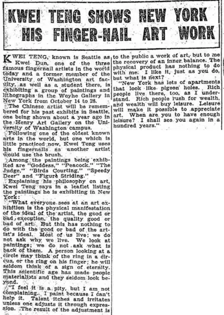

Kwei Teng Shows New York His Finger-Nail Art Work
访问原网页 ↗Visit original website ↗

S099 · Seattle Daily Times · 1929-10-17
纽约 Weyhe Gallery 展出滕的绘画与石版画，展期10月14日至26日。报纸列出 Goddess、Peacock、The Judge、Birds Courting、Speedy Deer 和 Figure Striding，并摘引滕在展览小册中的自述。The Seattle report gives October 14–26 for the Weyhe show of paintings and lithographs. It lists six titles, including The Judge and Birds Courting, and quotes Teng’s exhibition leaflet.
馆藏图像与原文Archived images and documents

原始网址Original URL
https://blogger.googleusercontent.com/img/b/R29vZ2xl/AVvXsEjfnaEr6fA_ZiUUO7yp15G94yEhSoxV1IHxHn2AxWJMfxK-z-HtU6IpJGpzwaoAXO4uRp3ktpE0m9tIXjuiBwXvqfy8IAhMekYPmY4I-J3vaEjCimkvA7hCzegsbFEFb5naa_9sAuLBAPQ7/s1600/1929_10_17+Kwei+Teng+Seattle+Daily+Times+(WA).jpg